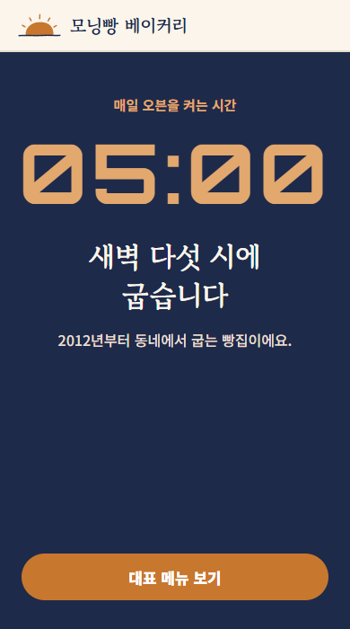
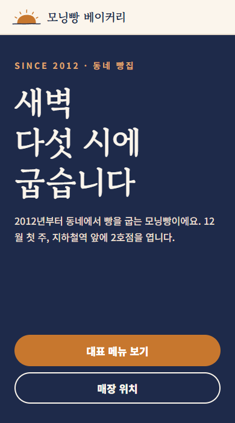
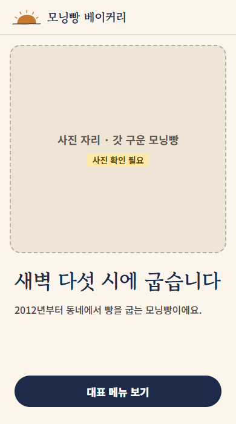
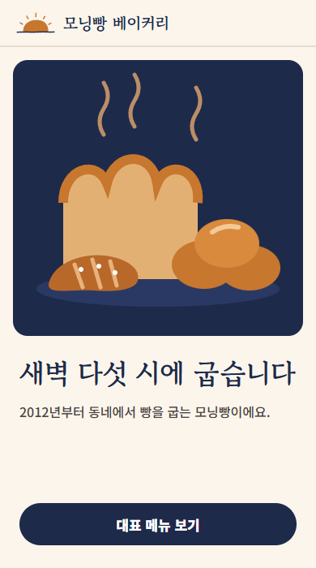
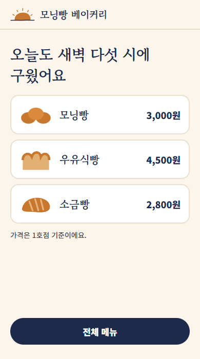

실제 Claude 결과물 · 첫 화면 여섯 개
버려
살려
보강
셋 중 하나만

5
버려
판정 + 이유 한 줄
버려
시계는 편의점 같아
버려
오픈 지나면 바로 낡아
보강
사진 생길 때까진 빵 그림으로
예시 화면 · 판정 내용은 실제로 쓴 것
Claude
살려
1번. 첫 화면은 이걸로 가.
보강
2번. 사진 생길 때까진 빵 그림으로.
버려
3번. 오픈 지나면 바로 낡아.
살려
4번. 메뉴 화면 위쪽에 써.
버려
5번. 시계는 편의점 같아.
버려
6번. 칠판은 1호점 메뉴판으로 충분해.
여섯 개, 한 번에
실제 결과 · 판정 뒤

1

2

2

4
그대로
보강됨
그대로
사진 자리 → 빵 그림
다음 시안의 기준
시계 숫자는 쓰지 않는다
(5번)
오픈이 지나면 낡는 말은 첫 화면에 두지 않는다
(3번)
칠판 느낌은 1호점 메뉴판에만
(6번)
기억해 둘게요!
오늘의 결론
버려·살려·보강
이유는 한 줄